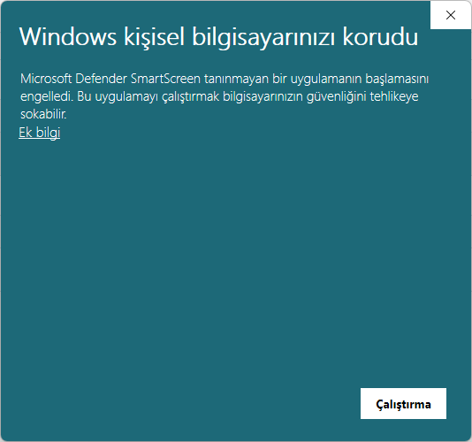
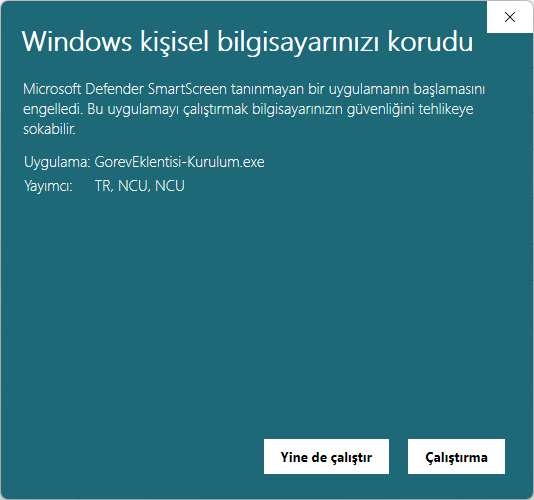
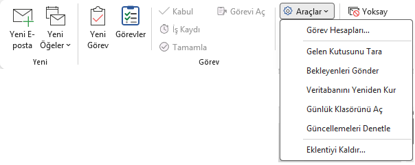
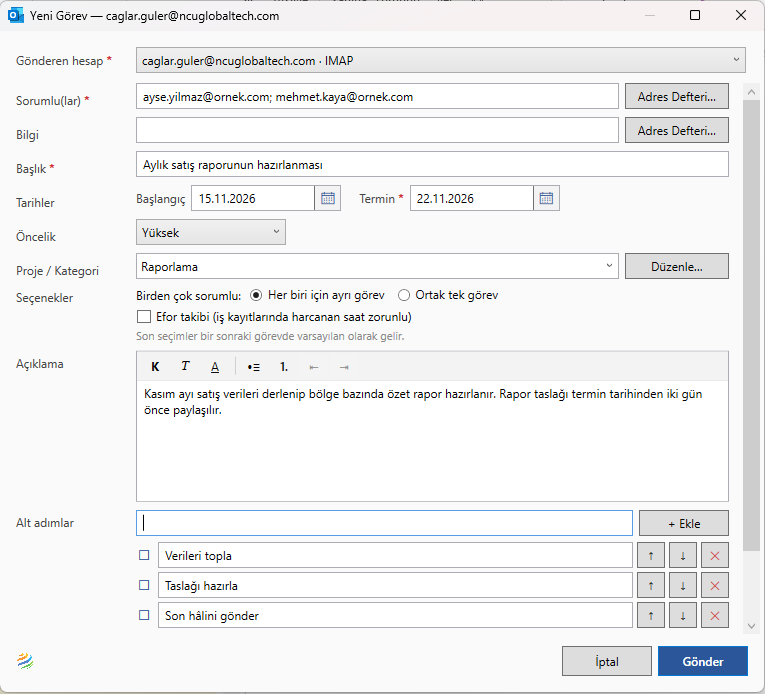
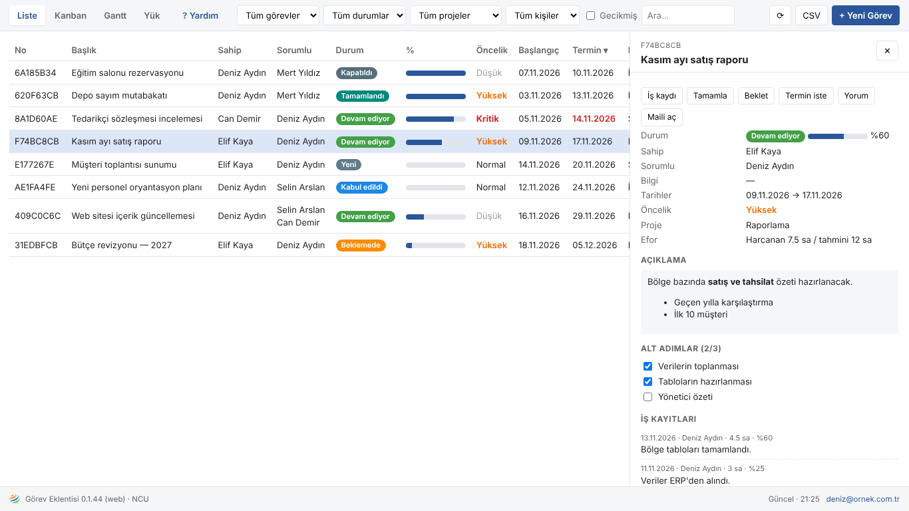
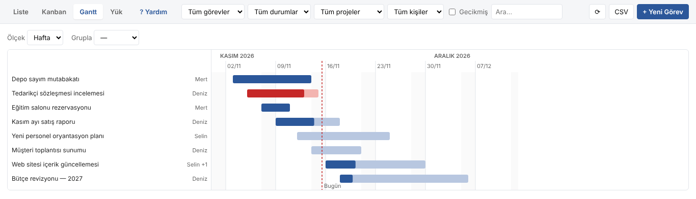

Görev Eklentisi: indirme, kurulum ve özellikler
NCU Task Tracker: download, setup and features
Bu sayfa eklentinin nasıl indirilip kurulduğunu ve temel özelliklerini ekran görüntüleriyle anlatır. Görüntülerdeki kişi, adres ve görevler örnektir. Ayrıntılı anlatım için kullanım kılavuzuna bakılır.
This page explains with screenshots how the add-in is downloaded and installed, and what its main features are. The people, addresses and tasks in the screenshots are examples. See the user guide for details. The Windows desktop edition shown here has a Turkish interface; the Mac, web and new Outlook edition has an English and Turkish interface.
Eklenti ne yapar?What does the add-in do?
Görev Eklentisi, Outlook'tan e-posta gönderir gibi görev vermeyi ve verilen ya da alınan görevleri tek pencereden izlemeyi sağlar. Görevler e-posta ile taşınır; ayrı bir sunucu ya da hesap gerekmez.
NCU Task Tracker makes it possible to assign tasks from Outlook as easily as sending an e-mail, and to follow assigned and received tasks in a single window. Tasks travel by e-mail; no separate server or account is needed.
- Görev veren görevi açar, gelişmeleri izler ve tamamlanan görevi kapatır.
- Sorumlu görevi kabul eder (ya da gerekçeyle reddeder), yaptıklarını iş kaydı olarak girer ve görevi tamamlar.
- Bilgi olarak eklenenler görevi ve gelişmeleri görür, işlem yapmaz.
- The assigner creates the task, follows its progress and closes it once completed.
- The assignee accepts the task (or declines it with a reason), enters what was done as work log entries and completes the task.
- People added as CC can see the task and its progress but take no action.
Her işlem karşı tarafa kendiliğinden bir güncelleme e-postası gönderir; görev iki tarafta da aynı durumda görünür.
Every action automatically sends an update e-mail to the other side, so the task appears in the same state for both.
İndirmeDownload
İndirme sayfası kullanılan bilgisayara uygun seçeneği işaretler. Üç seçenek vardır:
The download page highlights the option that suits the computer in use. There are three options:
| Kullanılan Outlook | İndirilecek | Desteklenen hesaplar |
|---|---|---|
| Windows'ta klasik Outlook (üst menüde Dosya sekmesi vardır) | GorevEklentisi-Kurulum.exe | Tümü: Exchange, Microsoft 365, IMAP, POP, Gmail |
| Mac için Outlook, Windows'ta yeni Outlook, Outlook web | Eklenti dosyası (manifest) | Microsoft 365 ve Outlook.com |
| Outlook kurulu değil (Linux, ChromeOS) | Tarayıcı sürümü (kurulum gerekmez) | Microsoft 365 ve Outlook.com |
| Outlook in use | Download | Supported accounts |
|---|---|---|
| Classic Outlook on Windows (there is a File tab in the top menu) | GorevEklentisi-Kurulum.exe | All: Exchange, Microsoft 365, IMAP, POP, Gmail |
| Outlook for Mac, new Outlook for Windows, Outlook on the web | Add-in file (manifest) | Microsoft 365 and Outlook.com |
| No Outlook installed (Linux, ChromeOS) | Browser edition (no installation needed) | Microsoft 365 and Outlook.com |
Farklı sürümleri kullananlar birbirine görev verebilir. Görev alan kişide eklenti yoksa görev normal bir e-posta olarak okunur.
People using different editions can assign tasks to each other. If the recipient does not have the add-in, the task is read as a normal e-mail.
Kurulum (Windows)Setup (Windows)
- İndirilen
GorevEklentisi-Kurulum.exeçift tıklanır. - "Windows kişisel bilgisayarınızı korudu" uyarısı çıkarsa Ek bilgi → Yine de çalıştır (nedeni aşağıda), yönetici onayında Evet seçilir.
- Kurulum, gereken bileşenleri (.NET Framework 4.8, Office çalışma zamanı, WebView2) eksikse kendisi kurar. Outlook açıksa kapatılır; kaydedilmemiş taslaklar önce kaydedilmelidir.
- Kapat denince Outlook yeniden açılır ve Giriş sekmesinde Görev grubu görünür.
- Double-click the downloaded
GorevEklentisi-Kurulum.exe. - If the "Windows protected your PC" warning appears, select More info → Run anyway (the reason is explained below), and Yes at the administrator prompt.
- Setup installs the required components (.NET Framework 4.8, Office runtime, WebView2) if they are missing. If Outlook is open, it is closed; unsaved drafts should be saved first.
- When Kapat (Close) is selected, Outlook reopens and the Görev (Task) group appears on the Home tab.
Mac, yeni Outlook ve Outlook web için adımlar ayrı kurulum sayfasındadır.
The steps for Mac, new Outlook and Outlook on the web are on a separate setup page.
Kurulumda çıkan "Windows kişisel bilgisayarınızı korudu" uyarısıThe "Windows protected your PC" warning during setup
Kurulum dosyası ilk çalıştırıldığında Windows aşağıdaki mavi pencereyi gösterebilir. Bu bir virüs ya da hata bildirimi değildir; kurulum dosyasında bir sorun olduğu anlamına gelmez.
When the installer is run for the first time, Windows may show the blue window below. It is not a virus or error notice, and it does not mean there is a problem with the installer.


GorevEklentisi-Kurulum.exe olduğu görülür ve Yine de çalıştır seçilir.2. Check that the app name is GorevEklentisi-Kurulum.exe, then select Run anyway.Neden çıkar? Microsoft Defender SmartScreen, internetten indirilen ve henüz yeterince tanınmamış programları ilk çalıştırmada durdurur. Bir programın "tanınması" için ya yaygın olarak indirilmiş olması ya da Microsoft'un tanıdığı bir yayımcı sertifikasıyla imzalanmış olması gerekir. Görev Eklentisi yeni yayınlanan bir yazılımdır ve kurulum dosyası NCU'nun kendi sertifikasıyla imzalanmıştır; bu nedenle Windows dosyayı henüz tanımaz. Yayımcı satırında bilgisayara göre "NCU" ya da "Bilinmeyen yayımcı" yazabilir.
Why does it appear? Microsoft Defender SmartScreen stops programs that are downloaded from the internet and not yet well known when they are run for the first time. For a program to be "recognized", it must either be widely downloaded or be signed with a publisher certificate that Microsoft recognizes. NCU Task Tracker is newly released software and its installer is signed with NCU's own certificate, so Windows does not recognize the file yet. Depending on the computer, the publisher line may read "NCU" or "Unknown publisher".
Ne yapılır? Dosya bu sitedeki indirme sayfasından alındıysa Ek bilgi → Yine de çalıştır ile devam edilir. Uyarı, indirilen her yeni kurulum dosyasının ilk çalıştırılışında çıkabilir. Kurum bilgisayarlarında bu seçenek kapatılmışsa kurulum bilgi işlem birimi tarafından MSI paketiyle yapılır.
What to do? If the file was obtained from the download page on this site, continue with More info → Run anyway. The warning can appear the first time each newly downloaded installer is run. If this option is disabled on organization computers, the IT department installs the add-in with the MSI package.
Kalıcı çözüm: Eklenti Microsoft'un eklenti mağazasına (Microsoft Marketplace) gönderildi; yayınlandığında Outlook'un içinden, dosya indirilmeden kurulabilecek ve bu uyarı görülmeyecek.
Permanent solution: The add-in has been submitted to Microsoft Marketplace. Once published, it can be installed from inside Outlook without downloading a file, and this warning will not appear.
Outlook'taki Görev grubuThe Task group in Outlook

- Yeni Görev görev gönderme formunu açar.
- Görevler tüm görevlerin izlendiği pencereyi açar.
- Kabul, İş Kaydı, Tamamla, Görevi Aç seçili görev e-postasına göre etkinleşir.
- Araçlar menüsünde hesap seçimi, Gelen Kutusu taraması, bekleyen postaların gönderilmesi, güncelleme denetimi ve eklentiyi kaldırma bulunur.
- Yeni Görev (New Task) opens the form for sending a task.
- Görevler (Tasks) opens the window where all tasks are followed.
- Kabul (Accept), İş Kaydı (Work log), Tamamla (Complete) and Görevi Aç (Open task) become active depending on the selected task e-mail.
- The Araçlar (Tools) menu contains account selection, scanning of the Inbox, sending of pending mail, the update check and removal of the add-in.
Görev göndermeSending a task

- Sorumlu(lar) e-posta adresi ya da adres defterindeki adla yazılır; birden çok kişi noktalı virgülle ayrılır.
- Birden çok sorumlu varsa görev her biri için ayrı ya da ortak tek görev olarak açılır.
- Efor takibi açılırsa iş kayıtlarında harcanan saat zorunlu olur ve tahmini saat girilir.
- Alt adımlar sorumlunun tek tek işaretleyeceği kontrol maddeleridir.
- Birden çok hesapta görev alanı açıksa Gönderen hesap listesinden görevin hangi adresten gideceği seçilir.
- Sorumlu(lar) (Assignee(s)) are entered as an e-mail address or by name from the address book; several people are separated with a semicolon.
- If there are several assignees, the task is created separately for each or as one shared task.
- If Efor takibi (Effort tracking) is turned on, the hours spent become mandatory in work log entries and an estimated number of hours is entered.
- Alt adımlar (Subtasks) are checklist items that the assignee ticks off one by one.
- If the task area is turned on for several accounts, the address the task is sent from is chosen in the Gönderen hesap (Sending account) list.
Gelen görevde yapılacaklarHandling a received task
Gelen görev e-postası Gelen Kutusu'nun altındaki Görevler klasörüne taşınır ve bir bildirim çıkar. Görev, e-postadaki düğmelerle, şeritteki Görev grubuyla ya da Görevler penceresinden işlenir:
The incoming task e-mail is moved to the Görevler folder under the Inbox and a notification appears. The task is handled with the buttons in the e-mail, with the Task group on the ribbon, or from the Tasks window:
- Kabul ya da gerekçe yazılarak Reddet.
- Çalışıldıkça İş Kaydı: not, ilerleme yüzdesi ve (efor takibi açıksa) harcanan saat.
- Alt adımlar bittikçe işaretlenir; gerekirse Beklet, Termin iste ya da Yorum kullanılır.
- İş bitince Tamamla. Görev veren görevi Kapat ile sonlandırır ya da geri açar.
- Kabul (Accept), or Reddet (Decline) with a reason.
- As work progresses, İş Kaydı (Work log): a note, a progress percentage and (if effort tracking is on) the hours spent.
- Subtasks are ticked off as they are finished; if needed, Beklet (Put on hold), Termin iste (Request due date) or Yorum (Comment) is used.
- When the work is done, Tamamla (Complete). The assigner ends the task with Kapat (Close) or reopens it.
Görevler penceresi: liste ve ayrıntıThe Tasks window: list and details

- Üstteki süzgeçlerle görevler role (verdiklerim, üzerimdekiler, izlediklerim), duruma, projeye ve kişiye göre daraltılır; Gecikmiş kutusu yalnızca termini geçenleri gösterir.
- Sütun başlığına tıklanınca liste o sütuna göre sıralanır.
- Satıra tıklanınca ayrıntı paneli açılır; yapılabilecek işlemler panelin üstündeki düğmelerdir.
- CSV düğmesi görünen listeyi Excel'de açılabilecek dosya olarak dışa aktarır.
- With the filters at the top, tasks are narrowed down by role (assigned by me, assigned to me, followed by me), status, project and person; the Gecikmiş (Overdue) box shows only tasks past their due date.
- Selecting a column heading sorts the list by that column.
- Selecting a row opens the details panel; the actions that can be taken are the buttons at the top of the panel.
- The CSV button exports the visible list as a file that can be opened in Excel.
Kanban

Kart başka bir sütuna sürüklenince ilgili işlem (kabul, bekletme, tamamlama gibi) başlatılır. Yalnızca o görevde izin verilen geçişler yapılabilir.
When a card is dragged to another column, the corresponding action (such as accepting, putting on hold or completing) is started. Only the transitions allowed for that task can be made.
Gantt

Ölçek gün, hafta ya da ay olarak seçilir; görevler projeye ya da sorumluya göre gruplanabilir. Kesikli kırmızı çizgi bugünü gösterir.
The scale is chosen as day, week or month; tasks can be grouped by project or by assignee. The dashed red line marks today.
Diğer özelliklerOther features
- Yük görünümü: kişi başına açık, gecikmiş ve tamamlanan görev sayıları ile tahmini ve harcanan saatler.
- Birden çok e-posta hesabı: her hesabın görevleri ayrı tutulur; hangi hesaplarda görev alanı açılacağı Araçlar → Görev Hesapları ile seçilir.
- Hatırlatma ve bildirim: yeni görev, güncelleme ve yaklaşan terminler için bildirim çıkar; bildirim alanındaki simge Görevler penceresini açar.
- Outlook Görevleri ile eşleme: sorumlu olunan görevler Outlook'un kendi Görevler listesinde ve Yapılacaklar çubuğunda da görünür.
- Ekler: görev gönderilirken dosya eklenebilir.
- Workload view: the number of open, overdue and completed tasks per person, with estimated and spent hours.
- Several e-mail accounts: the tasks of each account are kept separate; the accounts for which the task area is turned on are chosen with Araçlar → Görev Hesapları (Tools → Task Accounts).
- Reminders and notifications: notifications appear for new tasks, updates and approaching due dates; the icon in the notification area opens the Tasks window.
- Sync with Outlook Tasks: tasks assigned to the user also appear in Outlook's own Tasks list and in the To-Do bar.
- Attachments: files can be attached when a task is sent.
Güncelleme ve kaldırmaUpdating and removing
Eklenti yeni sürümü günde bir kez denetler; yayınlandığında Görev grubunda Yeni sürüm düğmesi belirir ve kurulum dosyasını indirir. İndirilen dosya çalıştırılınca eski sürümün üzerine kurulur; görevler ve tercihler korunur.
The add-in checks for a new version once a day; when one is released, a Yeni sürüm (New version) button appears in the Task group and downloads the installer. When the downloaded file is run, it installs over the old version; tasks and preferences are kept.
Kaldırmak için Araçlar → Eklentiyi Kaldır ya da Windows'un Ayarlar → Uygulamalar listesi kullanılır. Görev e-postaları posta kutusunda kalır.
To remove it, use Araçlar → Eklentiyi Kaldır (Tools → Remove add-in) or the Windows Settings → Apps list. Task e-mails stay in the mailbox.
Güncel sürüm 0.1.54 · 25.11.2026 22:21 (Türkiye saati)
Current version 0.1.54 · 25.11.2026 22:21 (Turkey time)